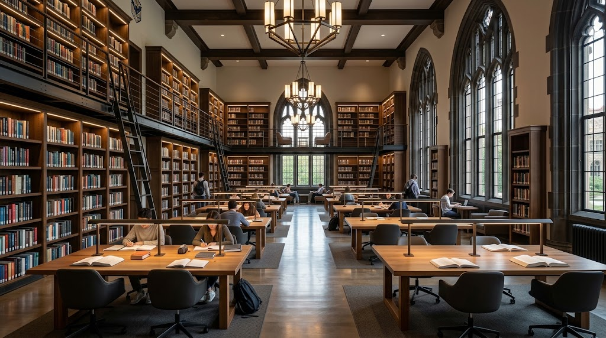

Harleen Quinzel
Doutora em Psicologia Educacional
Desenvolvimento Humano e Práticas Pedagógicas.
O Instituto Arkham do Saber (IAS) foi fundado em 1995 com o objetivo de oferecer educação de qualidade para jovens em situação de vulnerabilidade social em Gotham City.
Em 2010, com o fechamento definitivo do antigo Asilo Elizabeth Arkham, o IAS foi reinaugurado nas instalações da Ilha Arkham, agora transformadas em um centro educacional moderno. O antigo asilo deu lugar a salas de aula, laboratórios de informática, biblioteca comunitária e espaços de convivência.
Hoje, o IAS atende mais de 1.200 estudantes, oferecendo cursos técnicos, graduação e projetos de extensão. A instituição é símbolo da transformação da cidade: onde antes havia medo, hoje há conhecimento.

Nossa equipe é formada por profissionais altamente qualificados e comprometidos com a educação:
Doutora em Psicologia Educacional
Desenvolvimento Humano e Práticas Pedagógicas.

Doutor em Neurociência
Psicologia da Aprendizagem e Métodos de Pesquisa.

Mestre em Serviço Social
Ética, Cidadania e Projetos Comunitários.

Doutor em Computação
Lógica, Algoritmos e Programação.
Doutor em Ciências Ambientais
Sustentabilidade e Gestão de Recursos Naturais.
Doutora em Tecnologia Educacional
Informática na Educação e Inclusão Digital.
O IAS conta com uma estrutura moderna e acessível, projetada para oferecer a melhor experiência de aprendizado.